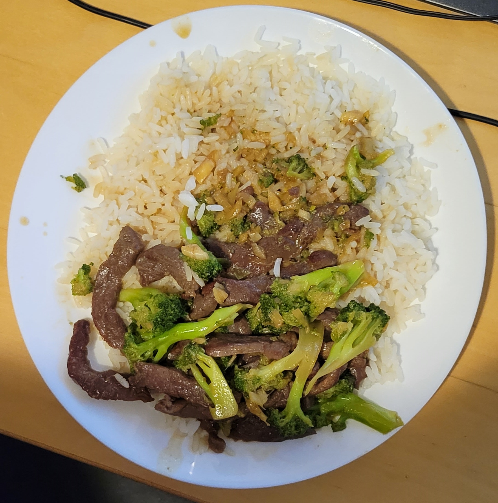

Beef Broccoli

a stir fry dish based on j kenji lopez-alt's beef broccoli video
Ingredients
Beef and Marinade
~340g sliced bef
1 teaspoon light soy sauce
1 teaspoon sesame oil
2 teaspoons shaoxing wine
1/4 teaspoon MSG
1 teaspoon cornstarch
1/4 teaspoon baking soda
1/2 teaspoon kosher salt
Sauce
1 tablespoon dark soy sauce
1 tablespoon light soy sauce
2 tablespoons oyster sauce
1 tablespoon sugar
Cornstarch Slurry
2 teaspoons cornstarch
1 tablespoon water
Broccoli
340g broccoli
Stir Fry
2 tablespoons olive oil
3 teaspoons garlic
2 teaspoons ginger
1 tablespoon shaoxing wine
Instructions
- For the Beef and Marinade:
Combine beef with marinade ingredients in a medium bowl.
Very roughly massage the marinade into the meat for at least 30 seconds.
Set aside for 15 minutes or refrigerate up to overnight.
- For the Sauce:
Combine soy sauce, wine, vinegar, oyster sauce, and chicken stock
or water in a small bowl and stir together until homogenous.
Set aside. Combine cornstarch and water in a separate small bowl
and stir with a fork until cornstarch is dissolved.
- For the Broccoli:
Heat a couple cups of salted water in a wok over high heat until boiling.
Add broccoli, cover, and cook until tender-crisp, about 1 minute.
Drain and transfer to a plate to air-dry.
- For the Stir-Fry:
Heat wok over high heat until lightly smoking.
Add 1 tablespoon (15ml) oil and swirl to coat.
Add beef, spread into a single layer and let it cook until lightly seared, about 30 seconds.
Stir-fry until beef is mostly cooked through and only a few pink spots remain.
Immediately add garlic and ginger and stir-fry until fragrant, 30 to 45 seconds longer.
- Stir-Fry cont.:
Add 1 tablespoon Shaoxing wine by pouring it around the side of the wok.
Stir sauce mixture and pour it in around the sides of the wok. Toss to combine.
Add broccoli and toss to combine. Stir the cornstarch slurry and add a splash.
Cook, tossing, until sauce thickens and the beef is cooked through, about 30 seconds longer.
Adjust sauce consistency with more cornstarch slurry if it is too thin, or a splash of water if it is too thick.
Transfer to a serving platter and serve immediately with steamed white rice.
Back to Main Page